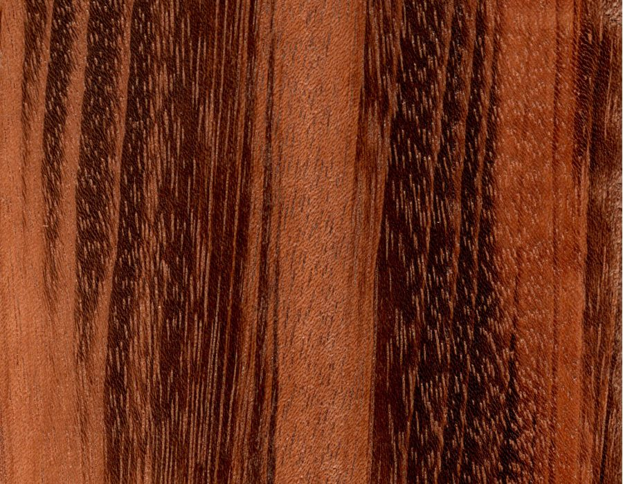

Maderas nativas argentinasN.º 3
Urunday
Astronium balansae · Anacardiáceas

- Otros nombres
- Urunday rubio, colorado o crespo; urunde’y pichai en Paraguay
- Dónde crece
- Chaco, Formosa, Corrientes, Misiones y el noreste de Santa Fe
- Color
- Castaño rojizo con vetas oscuras que se apagan con la luz
- Peso
- 1.100 a 1.250 kg/m³; se hunde
- Dureza
- Muy dura
- Durabilidad
- No se pudre enterrada ni bajo agua
- En el taller
- Difícil de serrar y de clavar
- Protección
- Sin CITES; en riesgo en Brasil
Florece de noviembre a enerosoydemadera.com